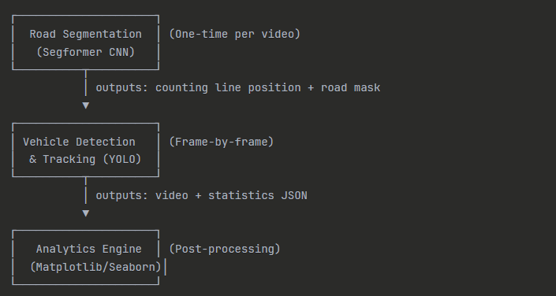

Building a Computer Vision System for Automated Traffic Analysis

Introduction
I needed to solve a deceptively simple problem: count vehicles crossing a line in a video. What started as a weekend project to help a local transportation department analyze traffic patterns turned into a deep dive into computer vision, object tracking, and the messy realities of making ML models work with real-world video footage. The department had hours of traffic camera footage but no automated way to extract meaningful data. Manual counting was tedious, error-prone, and didn't scale. They needed to understand traffic flow rates, vehicle composition (cars vs. trucks vs. buses), and temporal patterns throughout the day. More importantly, they needed this to work on footage from different camera angles and road configurations without manual intervention for each video. The constraint that shaped everything: this had to run on standard hardware without cloud dependencies. No subscription fees, no API calls, no internet required. Just a Python script that could process video files locally.
Initial Approach & Assumptions
My first instinct was to keep it simple: use a pre-trained YOLO model to detect vehicles, track them with a simple centroid tracker, and count when they cross a manually-defined line. I'd draw the counting line at a fixed position in the frame, maybe 60% down from the top. I assumed:- The camera angle would be consistent across videos
- The road would always occupy roughly the same portion of the frame
- A fixed horizontal line would work for most scenarios
- Vehicle tracking would "just work" with basic centroid matching
Architecture Overview
The system processes videos through three distinct stages, each with a focused responsibility:
- Stage 1: Road Segmentation (road_segmentation_v2.py) extracts a frame, uses Segformer to identify the road surface, calculates the road's primary orientation, and determines where to place a perpendicular counting line.
- Stage 2: Detection & Tracking (road_detection.py) processes every frame with YOLO for vehicle detection, maintains tracking IDs across frames, checks if tracked centroids cross the counting line, and writes both annotated video and raw statistics to disk.
- Stage 3: Analytics (analytics.py) reads the statistics JSON and generates visualizations: vehicle counts by class, flow rates over time, composition charts, and temporal patterns.
Technical Decisions
Model Selection: Segformer + YOLO I evaluated three approaches for road detection:- Classical CV: Edge detection + Hough transforms for lane lines
- Lightweight segmentation: DeepLabV3 with MobileNet backbone
- Transformer-based segmentation: Segformer
Tracking: Built-in vs. Custom
YOLO's built-in tracking (using BoT-SORT) saved me from implementing a custom tracker. I'd initially planned to write a Kalman filter-based tracker, but after reading the ultralytics documentation, I realized their tracking was more sophisticated than anything I'd build in a weekend. The trade-off: less control over tracking behavior. When vehicles occluded each other, the tracker occasionally swapped IDs. I had to accept ~2-3% counting errors from ID switches. For traffic analysis, this was acceptable—we cared about aggregate flow, not individual vehicle journeys.Counting Logic: Centroid Crossing vs. Bounding Box Intersection
I initially checked if a vehicle's entire bounding box crossed the line. This failed when large trucks straddled the line for multiple frames, causing duplicate counts. Switching to centroid crossing was simpler and more reliable: count once when the centroid transitions from one side of the line to the other. I stored the last-known side for each tracking ID in a dictionary. When a vehicle's centroid crossed, I incremented the counter and updated the dictionary. This stateful approach meant I had to handle ID persistence carefully, but it eliminated duplicates.Output Format: Why JSON for Statistics
I chose JSON for statistics output over CSV or SQLite. CSV would've been simpler for tabular data, but I needed to store nested structures (per-class counts, frame-by-frame data, metadata). SQLite felt like overkill for what was essentially a write-once, read-once dataset per video. JSON struck the right balance: human-readable for debugging, easy to parse in Python, and flexible enough to evolve the schema without migrations. The analytics script just did json.load() and had the entire dataset in memory.Challenges & Problems Faced
Challenge 1: The Segformer Model Downloaded on Every Run During early testing, I noticed the script paused for 30+ seconds on first run, downloading the Segformer model from Hugging Face. I assumed the model would cache automatically, but I hadn't realized the cache location depended on environment variables. After digging through transformers documentation, I found that setting TRANSFORMERS_CACHE explicitly solved it. More importantly, I added a check to verify the model was cached before processing a batch of videos. This wasn't mentioned in the README, but it was critical for production use. Challenge 2: Frame Rate Mismatch Breaking Time-Series Analysis The analytics script calculated "vehicles per minute" by dividing total counts by video duration. This worked fine until I tested on a video where the camera's actual frame rate (23.97 fps) didn't match the metadata (30 fps). OpenCV's cv2.CAP_PROP_FPS was giving me the wrong value. I had to calculate the real frame rate by dividing frame count by duration. The bug was subtle—charts showed traffic "spikes" that were actually just frame rate inconsistencies. I added validation to compare metadata FPS against calculated FPS and log a warning if they differed by more than 5%. Challenge 3: Memory Leak from Holding Frame References After processing a 2-hour video, the script crashed with an out-of-memory error. I'd been appending detection results to a list for every frame, thinking I might need them later. With 144,000 frames, each storing bounding boxes and tracking IDs, I was holding gigabytes of data unnecessarily. The fix was embarrassingly simple: only aggregate what I needed (counts, timestamps, class labels) and discard per-frame details immediately. I kept a running sum instead of a full frame history. Memory usage dropped from 8GB to ~200MB for the same video. Challenge 4: Curved Roads Breaking Line Placement Logic The road orientation calculation worked great for straight roads but failed on curves. I was computing a single angle from the segmented road mask, but a curved road doesn't have a single orientation. The counting line ended up diagonal when it should've been perpendicular to the local traffic flow. I solved this by sampling multiple points along the road centerline and calculating the orientation at the line's actual placement position, not the global average. This required fitting a spline to the road centerline and computing the tangent vector. It was more complex but handled curves correctly.What I'd Do Differently
If I were rebuilding this today, I'd separate configuration from code. Right now, the video path is hardcoded in main() of road_detection.py. I'd add a CLI with argparse to accept video paths, output directories, and model paths as arguments. This would make batch processing trivial. I'd also implement a real-time mode that displays intermediate steps (segmentation output, detected road, counting line) before starting the full video processing. Currently, you don't know if the segmentation failed until you watch the output video. A preview mode would save hours of trial-and-error. The statistics JSON schema grew organically and now feels inconsistent. Some fields are camelCase, others are snake_case. I'd design a proper schema upfront and use Pydantic for validation. This would catch schema mismatches between the detection and analytics scripts immediately. Finally, I'd add tests. Not for the ML models themselves, but for the counting logic, line-crossing detection, and data aggregation. These are pure functions that don't depend on model inference, yet I tested them manually every time I made changes.Lessons Learned
Model integration is harder than model selection. Choosing YOLO took 10 minutes. Making it work reliably with real video footage—handling edge cases, tuning confidence thresholds, managing tracking IDs—took days. Stateful systems need explicit state management. The tracking ID dictionary seemed like a minor implementation detail but became a central piece of the architecture. I should've designed it more carefully from the start, with clear rules for when IDs expire and how to handle gaps. Preprocessing matters more than I expected. I spent more time on road segmentation and counting line placement than on the actual vehicle detection. Getting the geometry right was critical—no amount of fancy ML could fix a miscalibrated counting line. Local-first was the right constraint. Forcing myself to avoid cloud APIs made the system portable and cost-effective. It runs anywhere Python runs, with no recurring costs or privacy concerns about uploading video footage.Who This Project Is For
This system is ideal for:- Municipal transportation departments analyzing traffic patterns
- Urban planners conducting traffic studies without expensive sensors
- Researchers needing baseline vehicle count data from video footage
- Anyone who needs reproducible, automated traffic analysis from existing camera infrastructure
- You need real-time counting (processing is slower than real-time on CPU)
- You need sub-1% accuracy (tracking errors cause ~2-3% miscounts)
- You're working with extreme weather conditions (snow, heavy rain degrades detection)
- You need individual vehicle tracking across intersections (IDs aren't persistent enough)